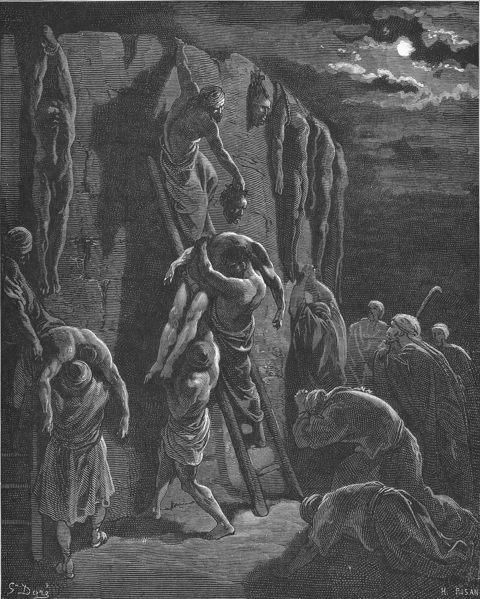

1 Samuel 31 — The Mister Translation

1 Samuel 31:10–13. The Philistines have fastened Saul’s body to the wall of Beth-shan, and all the valiant men of Jabesh-gilead go all night to take the bodies down. Doré’s plate imagines the wall as a rock face hung with bodies and the rescuers working by ladder in the moonlight, with mourners bowed in the foreground; the Hebrew says only that the body was “fastened” and does not say how. The severed head Doré shows comes from verse 9; the Hebrew does not say what became of it, and Chronicles has it in the house of Dagon.

Translator's Notes — verse by verse
On Mount Gilboa. “And the Philistines were fighting against Israel; and the men of Israel fled from before the Philistines, and fell slain on Mount Gilboa”: the Philistines had gathered at Aphek and gone up to Jezreel (29:1, 11), and Saul had camped at Gilboa when they camped at Shunem (28:4, all already on these pages). The Hebrew gives no account of the fight; it begins with the Philistines fighting and Israel already running. David’s lament will curse these mountains (2 Samuel 1:21, already on these pages). The Greek has them “fall wounded” and spells the mountain Gelboue. The ASV and KJV have “fell down slain in mount Gilboa”; the NWT 1984 “kept falling down slain”; the NIV “many fell dead”; the Geneva “fell down wounded”; the Douay “mount Gelboe”.
The sons. “And the Philistines kept close upon Saul and upon his sons”: vayadbiqu, the causative of davaq, to cling, the verb of the man who “clings” to his wife (Genesis 2:24, already on these pages); here it is said of pursuers who make themselves cling to the one they chase. The Greek has “join”. The ASV has “followed hard upon Saul and upon his sons”; the NIV “in hot pursuit”; the NWT 1984 “kept in close range of Saul and his sons”; the Geneva “pressed sore upon”; the Douay “fell upon Saul”.
Three sons. “And the Philistines struck down Jonathan and Abinadab and Malchishua, the sons of Saul”: at 14:49 the sons are “Jonathan and Ishvi and Malchi-shua” (already on these pages), so Abinadab stands here where Ishvi stood there, and 1 Chronicles 8:33 and 9:39 list Jonathan, Malchi-shua, Abinadab and Eshbaal; the Hebrew does not say how the lists fit together. Jonathan’s name was last written at Horesh, where he and David cut a covenant before Jehovah and “Jonathan went to his house” (23:18, already on these pages); this is the next time it appears. The Greek has “Aminadab” and “Melchisa”. The ASV has “Jonathan, and Abinadab, and Malchishua”; the NWT 1984 “Malchi-shua”; the NIV “Malki-Shua”; the TLB “Abinidab”; the Douay “Melchisua”.
The archers. “And the battle grew heavy against Saul; and the archers found him, men with the bow”: ha-morim, the shooters, from yarah, to shoot. The form stands in two verses of the Hebrew Bible, this one and 1 Chronicles 10:3, where the word that follows is spelled differently, min-ha-yorim. “Men with the bow” stands in one verse; Chronicles has only “the shooters with the bow”. The Greek has “the javelin-men, men who are archers”. The ASV has “the archers overtook him”; the NWT 1984 “the shooters, the bowmen, finally found him”; the NIV “when the archers overtook him”.
In great pain. “And he writhed in great pain from the archers”: va-yachel meod, which stands in one verse of the Hebrew Bible; Chronicles has the verb without “greatly”. The verb can come from chul, to writhe, as in birth pangs, or from chalal, to pierce; “writhed in great pain” holds either way, and the Hebrew does not say where he was hit. The Greek takes the second road and adds a place: “he was wounded in the hypochondria”, the soft part under the ribs. The ASV has “he was greatly distressed by reason of the archers”; the KJV “he was sore wounded of the archers”; the NIV “they wounded him critically”; the NWT 1984 “he got severely wounded by the shooters”; the Douay “he was grievously wounded by the archers”.
Draw your sword. “And Saul said to the one who carried his armour: ‘Draw your sword and thrust me through with it’”: “Draw your sword” stands in three verses of the Hebrew Bible, Abimelech’s order at Thebez (Judges 9:54, already on these pages), this verse, and 1 Chronicles 10:4. Abimelech had said “kill me”, and his young man “thrust him through”, va-yidqerehu; Saul asks for that very verb, daqar, and uses it twice in the one verse. The Greek has “pierce me through”. The ASV and KJV have “Draw thy sword, and thrust me through therewith”; the Geneva “Draw out thy sword, and thrust me through therewith”; the NIV “run me through”; the NWT 1984 “run me through with it”; the Douay “kill me”.
These uncircumcised. “Lest these uncircumcised come and thrust me through and abuse me”: “these uncircumcised” stands in three verses of the Hebrew Bible, Jonathan’s “the outpost of these uncircumcised” (14:6, already on these pages), this verse, and 1 Chronicles 10:4. The word is arel; Jonathan said it going up to win a battle, and Saul says it going out of one. The verb for “abuse” is hit’allel, to make a plaything of someone: it is the verb of what Egypt did to Israel (6:6, “dealt harshly”), of what the men of Gibeah did to the Levite’s concubine (Judges 19:25, “abused her”) and of Balaam’s complaint to his donkey, “you have made a fool of me” (Numbers 22:29, all already on these pages). What Saul dreads for a living king is not death but being used as a toy by living enemies. The Greek has “mock”. The ASV and KJV have “abuse me”; the NIV “these uncircumcised fellows will come and run me through and abuse me”; the NWT 1984 “deal abusively with me”; the Geneva “mock me”; the Douay “mock at me”; the TLB “torture me”.
Afraid. “But the one who carried his armour was not willing, for he was very afraid. And Saul took the sword, and fell on it”: “the one who carried his armour” stands in thirteen verses of the Hebrew Bible, and the last three are verses 4–6 here. David once held the office (16:21, “he became his armour-bearer”), and Jonathan’s armour-bearer climbed up after him and killed after him (14:13, both already on these pages); this one will not strike the king he serves. “The sword” has the article, and the Hebrew does not say whose sword it was. The ASV has “for he was sore afraid”; the NIV “terrified”; the NWT 1984 “was unwilling, because he was very much afraid”; the Douay “struck with exceeding great fear”; the Geneva “sore afraid”.
The other account. “And the one who carried his armour saw that Saul was dead, and he too fell on his sword, and died with him.” This chapter has no Amalekite and no spear, and the young man of 2 Samuel 1:6–10 (already on these pages), who says he found Saul “leaning on his spear” and put him to death at his own request, does not mention an armour-bearer. The two texts are set side by side here and not reconciled; the readings are laid out in the notes at 2 Samuel 1, together with David’s verdict on the man’s own words (1:16). The ASV has “he likewise fell upon his sword, and died with him”; the NIV “he too fell on his sword and died with him”; the NWT 1984 “he too fell upon his own sword and died with him”; the Douay “he also fell upon his sword and died with him”.
Together. “So Saul died, and his three sons, and the one who carried his armour, also all his men, on that day together”: Samuel’s word at En-dor, “tomorrow you and your sons will be with me” (28:19, already on these pages), is kept to the day. “All his men” cannot mean the army, which flees in verses 1 and 7 and is alive; it means the men about him. The Greek leaves out “also all his men”, and Chronicles has “and all his house died together” (10:6) and neither the armour-bearer nor the men. The ASV and KJV have “and all his men, that same day together”; the NWT 1984 “even all his men”; the NIV “and all his men died together that same day”; the TLB “his troops”.
Across the valley. “And the men of Israel who were on the other side of the valley, and those who were on the other side of the Jordan, saw that the men of Israel had fled, and that Saul and his sons were dead”: be-ever ha-emeq, “the valley”, which the Hebrew does not name, taken here to be the valley of Jezreel under Gilboa. The word ever can mean the far side or the region, and the NWT 1984 takes it as the region: “in the region of the low plain and … in the region of the Jordan”. Chronicles has only the men “in the valley” (10:7). The ASV has “on the other side of the valley, and they that were beyond the Jordan”; the KJV “on the other side Jordan”; the NIV “along the valley and those across the Jordan”; the TLB “on the other side of the valley and beyond the Jordan”; the Douay “beyond the valley, and beyond the Jordan”.
The cities. “And they abandoned the cities and fled; and the Philistines came and dwelt in them”: “and they abandoned the cities” stands in one verse of the Hebrew Bible. At Michmash the people had hidden in caves and “Hebrews crossed the Jordan to the land of Gad and Gilead” (13:6–7, already on these pages); here they run again, and this time the Philistines settle. The cities “that the Philistines had taken from Israel” had returned to Israel “from Ekron as far as Gath” (7:14, already on these pages); now the Philistines are living in Israel’s own. The Greek has “leave their cities”. The ASV has “they forsook the cities, and fled; and the Philistines came and dwelt in them”; the NIV “they abandoned their towns and fled. And the Philistines came and occupied them”; the NWT 1984 “began to leave the cities and flee”; the Geneva “left the cities”.
Stripping the slain. “And it happened on the next day that the Philistines came to strip the slain; and they found Saul and his three sons fallen on Mount Gilboa”: the verb is the one of Saul at Naioth, who “stripped off his clothes” and “fell down naked all that day and all that night” (19:24, already on these pages). The Greek has “mountains of Gelboue”. The ASV and KJV have “came to strip the slain”; the NIV “to strip the dead”; the Geneva “to spoil them that were slain”.
The head and the armour. “And they cut off his head, and stripped off his armour”: the verb is karat, the verb of David with Goliath, who “cut off his head” with the Philistine’s own sword, and brought the head to Jerusalem and put his weapons in his tent (17:51, 54, already on these pages). The Greek has neither the head nor the cutting: “they turned him over and stripped off his armour”. Chronicles has the head taken with the armour and fastened “in the house of Dagon” (1 Chronicles 10:9–10), where at Ashdod Dagon’s own head had lain cut off on the threshold (5:4, already on these pages). The ASV has “they cut off his head, and stripped off his armor”; the NWT 1984 “proceeded to cut off his head and strip off his armor”; the TLB “cut off Saul’s head”.
News for the idols. “And they sent into the land of the Philistines all around, to carry the news to the house of their idols — and to the people”: levasser, to bring news, the root of the one who brought the news to Shiloh, “Israel has fled before the Philistines” (4:17), and of David’s “proclaim it not in the streets of Ashkelon” (2 Samuel 1:20, both already on these pages). The Philistines take their good news to their gods first, and then to the people, and the Hebrew sets the people off with a dash. “Their idols”, atsabbeihem, stands in six verses of the Hebrew Bible, among them 2 Samuel 5:21 (now on these pages), where the Philistines leave their idols behind at Baal-perazim and David and his men carry them away, and 1 Chronicles 10:9. The ASV has “to carry the tidings unto the house of their idols, and to the people”; the KJV “to publish it in the house of their idols, and among the people”; the NIV “to proclaim the news in the temple of their idols and among their people”; the NWT 1984 “to inform the houses of their idols and the people”; the TLB “sent the wonderful news of Saul’s death to their idols”.
The house of the Ashtaroth. “And they put his armour in the house of the Ashtaroth”: “the house of the Ashtaroth” stands in one verse of the Hebrew Bible. The Ashtaroth are the goddesses Israel “put away” at Mizpah (7:4) and confessed to serving (12:10, both already on these pages); see Ashtaroth. The Hebrew does not say where the house stood. Chronicles has “the house of their gods”, and the Greek has a single temple, “the Astarteion”. The ASV has “the house of the Ashtaroth”; the KJV “the house of Ashtaroth”; the NIV “the temple of the Ashtoreths”; the NWT 1984 “the house of the Ashtoreth images”; the Geneva “the house of Ashtoreth”; the Douay “the temple of Astaroth”.
The wall of Beth-shan. “And his body they fastened to the wall of Beth-shan”: taqe’u, the verb of driving in a peg: Jael “drove the peg” into Sisera’s temple (Judges 4:21) and Delilah “drove in the peg” (16:14, both already on these pages). The Hebrew says “fastened”, not “hung”; 2 Samuel 21:12 says the Philistines “hanged” them in “the broad place of Beth-shan” (now on these pages). Beth-shean commands the meeting of the Jezreel valley and the Jordan valley, and it is the city Manasseh “did not drive out” (Judges 1:27; Joshua 17:11, both already on these pages). The Greek has “fixed”. The ASV has “they fastened his body to the wall of Beth-shan”; the NWT 1984 “his corpse they fastened on the wall of Beth-shan”; the TLB “his body was fastened to the wall”; the Geneva “hanged up his body on the wall of Beth Shan”; the Douay “his body they hung on the wall of Bethsan”.
Jabesh hears. “And the inhabitants of Jabesh-gilead heard concerning him what the Philistines had done to Saul”: elav, “concerning him”. This is the town whose elders had asked Nahash for “seven days” (11:3) and whose rescue was Saul’s first act as king (11:1–11, both already on these pages); it is the first town to answer for him now. See Jabesh-gilead. The ASV has “heard concerning him that which the Philistines had done to Saul”; the NWT 1984 “as regards him, the inhabitants of Jabesh-gilead got to hear”; the NIV “heard what the Philistines had done to Saul”; the Douay “heard all that the Philistines had done to Saul”.
All night. “And all the valiant men arose, and went all night, and took the body of Saul and the bodies of his sons from the wall of Beth-shan”: “all the valiant men”, kol ish chayil, stands in three verses of the Hebrew Bible, here, 1 Chronicles 10:12, and Judges 3:29 (“every strong man and every man of valor”, already on these pages). The Greek takes down only “the body of Saul and the body of Jonathan his son”. The ASV has “all the valiant men arose, and went all night”; the NIV “marched through the night to Beth Shan”; the NWT 1984 “rose up and went all night long”; the Geneva “(as many as were strong men)”; the Douay “walked all the night”.
Burned. “And they came to Jabesh, and burned them there”: the Hebrew gives no reason, and does not say what state the bodies were in after their day on the wall. The Greek burns only Saul and Jonathan, and Chronicles has no burning but says they buried the bones (10:12). In verses 12 and 13 the town is written yavesha, with a final he, which is letter for letter the word for dry land (yabbashah). The ASV has “burnt them there”; the NIV “where they burned them”; the NWT 1984 “burned them there”; the TLB “cremated them”.
Under the tamarisk, and the fast. “And they took their bones, and buried them under the tamarisk in Jabesh; and they fasted seven days”: eshel, the tamarisk, stands in three verses of the Hebrew Bible: Abraham’s at Beersheba (Genesis 21:33), the one Saul sat under at Gibeah with his spear in his hand (22:6, both already on these pages), and this one, where his bones lie. The Greek has “under the field of Jabis”, and Chronicles a different tree, ha-elah, under which they bury the bones (10:12). “Fasted seven days” stands in two verses, here and Chronicles. Jabesh had asked for seven days to be saved (11:3), and now gives seven days to the one who saved it; David and his men fasted “until the evening” (2 Samuel 1:12, already on these pages). The bones do not stay: 2 Samuel 21:12–14 has David take them from the men of Jabesh-gilead and bury them in Zela, in the tomb of Kish, Saul’s father, and 2 Samuel 2:4–7 has him send the men of Jabesh a blessing “for this kindness” (2 Samuel 2:4–7 is now on these pages; 2 Samuel 21:12–14 is now too). The ASV has “under the tamarisk-tree in Jabesh”; the KJV “under a tree at Jabesh”; the NIV “under a tamarisk tree at Jabesh”; the NWT 1984 “under the tamarisk tree in Jabesh, and they went fasting for seven days”; the TLB “beneath the oak tree at Jabesh”; the Douay “in the wood of Jabes”.
Patterns worth carrying forward
Where this translation keeps the words exact and distinct: “the one who carried his armour” in verses 4–6 alike; “thrust me through” for daqar; “these uncircumcised”, as in 14:6; “abuse” for hit’allel, as in Judges 19:25; “archers” for morim; “writhed in great pain” for va-yachel meod; “fell on” in verses 4 and 5 alike; “the cities”; “strip” for the Philistines’ work in verses 8 and 9; “cut off his head”, as in 17:51; “carry the news” for levasser; “the Ashtaroth”, as in 7:4 and 12:10; “fastened” for taqe’u; “the valiant men”; “burned”; and “the tamarisk” for eshel, as in 22:6.
Echoes paid. The Philistine camps at Aphek and Shunem and the Israelite camp at Gilboa (29:1, 11; 28:4); “tomorrow you and your sons will be with me” (28:19); Jonathan’s last words with David at Horesh (23:18); the sons of Saul (14:49); the armour-bearers of David and of Jonathan (16:21; 14:13) and “these uncircumcised” (14:6); Abimelech’s order at Thebez (Judges 9:54); Egypt’s and Gibeah’s abuse and Balaam’s complaint (6:6; Judges 19:25; Numbers 22:29); the cities returned to Israel and the Hebrews across the Jordan (7:14; 13:6–7); Saul stripped at Naioth (19:24); David’s cutting off of Goliath’s head (17:51, 54); the bearer of news at Shiloh and David’s “proclaim it not” (4:17; 2 Samuel 1:20); Dagon’s head on the threshold (5:4); the Ashtaroth put away and served (7:4; 12:10); Jael’s and Delilah’s pegs (Judges 4:21; 16:14); Beth-shean not driven out (Judges 1:27; Joshua 17:11); the seven days of Jabesh and Saul’s rescue of it (11:3, 11); the tamarisks of Beersheba and Gibeah (Genesis 21:33; 22:6); and the fast of David’s men until the evening (2 Samuel 1:12). Samuel’s word at En-dor and the Amalekite’s story are now set beside the death itself (28:19; 2 Samuel 1:6–10).
Echoes planted. The parallel account of the death and its verdict on Saul, the head in the house of Dagon and the bones under the terebinth (1 Chronicles 10:1–14); the lists of Saul’s sons (1 Chronicles 8:33; 9:39); the Philistines’ idols carried off at Baal-perazim (2 Samuel 5:21, now on these pages); David’s blessing on Jabesh-gilead and his burial of the bones at Zela (2 Samuel 2:4–7, now on these pages; 21:12–14); and Zedekiah’s fear of being abused (Jeremiah 38:19). None of the others is translated here yet.
1 Samuel ends here. The story continues in 2 Samuel 1 (now on these pages), where on the third day after David’s return to Ziklag a man comes from Saul’s camp with his clothes torn and earth on his head.